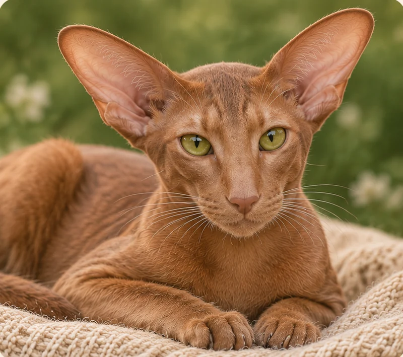

Без постоянного интернета
После первоначальной загрузки и сохранения файлов браузером программа может работать автономно. Доступ к серверу не нужен для обычных записей.
Почему это удобно
Создана для реальной жизни питомника, где нужная запись должна открываться сразу — независимо от капризов связи и количества дел.
После первоначальной загрузки и сохранения файлов браузером программа может работать автономно. Доступ к серверу не нужен для обычных записей.
Карточки, помёты и дневники хранятся локально в браузере устройства. Облачное хранение не требуется для базовой работы.
Связанные записи помогают видеть происхождение, вязки, потомство и историю каждого животного, а не собирать сведения по разным таблицам.
Вязки, ожидаемые роды, прививки, обработки и другие события удобно вести в одном ветеринарном календаре.
Учёт котят и щенков: веса, история развития, заметки, процедуры и дальнейшая судьба выпускников.
Можно сохранить файл со своими записями и вручную перенести базу на другое устройство. Регулярные копии защищают от случайной потери.
Две редакции — один подход
Обе открываются в обычном браузере на компьютере и телефоне. Дополнительных программ и обязательной регистрации для бесплатной версии не требуется.

Коды окрасов WCF, родословные, вязки, помёты, контроль веса, ветеринарный календарь и предупреждения о рисках по группам крови.
Подробнее и открыть книгу
Карточки и происхождение собак, учёт течек, вязок и беременностей, помёты, графики роста и ветеринарный учёт.
Подробнее и открыть книгуВ каждой бесплатной редакции доступно до 20 самостоятельных карточек животных и 4 сохранённых помётов. Котята и щенки внутри помёта не занимают отдельные места в лимите карточек.
Три простых шага
Всё начинается с обычной ссылки. Можно работать на компьютере, Android и iPhone — при этом каждый браузер хранит свою локальную базу.
Не ради красивых отчётов
Я больше десяти лет занимаюсь разведением кошек и собак. Мне нужна была книга, которая сама помогает считать важные даты, хранит наблюдения и не требует постоянного интернета.
Сначала это был ветеринарный календарь для котят. Потом добавились карточки животных, родословные, вязки, помёты и другие ежедневные задачи питомника.
Проект развивается с участием заводчиков: замечания, ошибки и пожелания помогают делать его удобнее. Для обсуждения есть сообщество ВКонтакте и Telegram.
Справка и поддержка
Понятные инструкции по реальным кнопкам нашей книги: от установки до безопасного восстановления всех записей.
Частые вопросы
Отвечаем на самые частые вопросы о доступе, сохранности и стоимости программы.
Книга запускается в обычном браузере. При первой загрузке нужен интернет; затем её можно установить на главный экран или использовать в браузере. Если файлы программы сохранены для автономной работы, она открывается без сети.
Данные бесплатной книги сохраняются локально в браузере на вашем устройстве, а не в общей базе заводчиков. Если вы работаете в другом браузере или на другом телефоне, там будет отдельное хранилище. Не очищайте данные сайта без заранее сохранённой JSON-копии.
Нет. Для использования базовой версии не требуется аккаунт, номер телефона или вход через социальные сети.
Основные функции племенного учёта доступны бесплатно в пределах 20 самостоятельных карточек животных и 4 сохранённых помётов в каждой редакции. Молодняк внутри помёта учитывается в самом помёте; отдельная самостоятельная карточка занимает место после перевода животного в производители. Расширенная версия пока готовится.
Новые самостоятельные карточки или новые помёты сверх бесплатного лимита создать нельзя. Уже сохранённые записи остаются доступны для просмотра, редактирования и выгрузки в JSON. Платное расширение ещё не запущено.
Сохраните JSON-файл резервной копии на первом устройстве, затем восстановите его на втором. Внимательно читайте предупреждение перед импортом: в текущем механизме восстановление может заменить существующую локальную базу, а не объединить две. Подробная инструкция ↗
Да. Локальное хранение избавляет от обязательного облачного сервера, но не защищает от очистки браузера, поломки устройства или ошибки пользователя. Поэтому мы советуем регулярно сохранять резервные копии JSON в отдельном надёжном месте.
Расширенная версия находится в разработке. Условия и стоимость пока не объявлены. Текущая базовая версия не требует подписки. Новости публикуем в Telegram-канале и сообществе ВК.
Пора попробовать
Откройте свою книгу и оцените её на реальных задачах. Ваши замечания помогают проекту расти.